2.1 Probabilities and distributions
When dealing with categorical data, one only do one thing with results: compare different results, and decide whether they are the same or not. Let’s take a subset of the data from the previous chapter:
| Name | Animal |
|---|---|
| Alice | Cat |
| Bob | Dog |
| Cynthia | Mouse |
| Dude | Dog |
| Edward | Cat |
| Fanny | Elephant |
In this data, we can see that Alice and Bob are different types of animals, but that Bob and Dude are the same type of animal.
1 Histograms
Since we can decide whether results are the same or not, we can gather data points depending on their results. In the data above, that means separating data by the type of animal they are. If we do that, we have:
| Animal | Names |
|---|---|
| Cat | Alice, Edward |
| Dog | Bob, Dude |
| Mouse | Cynthia |
| Elephant | Fanny |
However, often, the actual identifier of the data points, names in this case, are not important. Therefore, we can replace this by a table with counts, not names:
| Animal | Count |
|---|---|
| Cat | 2 |
| Dog | 2 |
| Mouse | 1 |
| Elephant | 1 |
Instead of writing such a table, we can instead draw a picture, called a histogram. The histogram for this data will contain the categories in the horizontal axis, and in the vertical axis, bars whose height correspond to the number of data points belonging to each category.
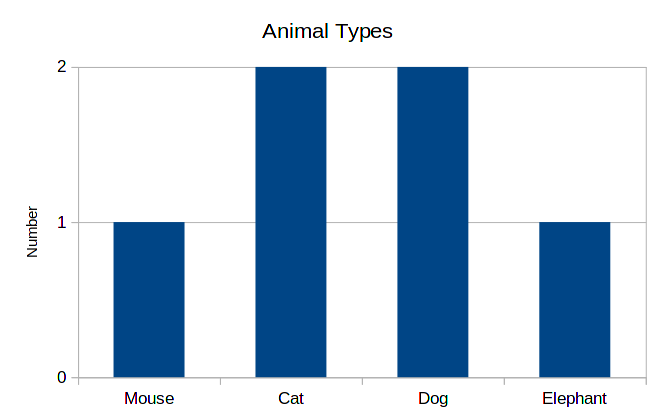
This is a very practical and intuitive way of showing data. So, whenever you are studying categorical data, building such a graph is the first thing to do.
Another variant is to draw bars horizontally. This can be used to put bars in a more compact way, since text is also horizontal.
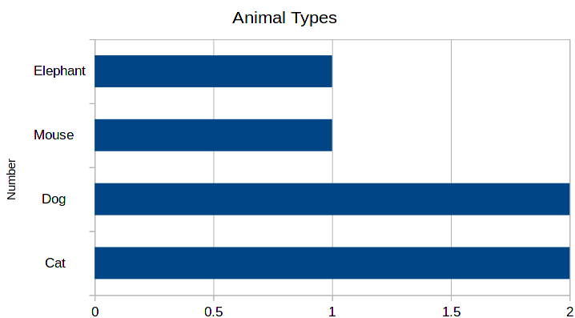
As you can see, the order of bars is different in both cases. Since there is no inherent order in categories, the order of bars is not important. One can choose, for example, alphabetical order, or make bars increasing in size. The main reason for deciding on an order is the readability of the graph.
2 Probabilities
This same data can be represented differently. Instead of writing the total numbers for each of the categories, we write the proportions for each one of these. Or equivalently, the probability of a data point being in each category. So, for example, we have 2 cats among 6 animals, so the probability is 2/6 = 0.33. We can rewrite the table as:
| Animal | Probability |
|---|---|
| Cat | 2/6 = 33.3% |
| Dog | 2/6 = 33.3% |
| Mouse | 1/6 = 16.6% |
| Elephant | 1/6 = 16.6% |
And the corresponding histogram is the following:
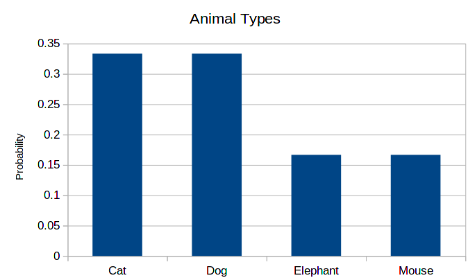
As you can see, the shape is exactly the same. This is always the case, only the scale of the vertical axis changes. The advantage of this presentation is that the users don’t have to think about relative sizes. This advantage is also a downside of the graph: just by looking at the probability histogram, we cannot know the total amount of data that we had at our disposal.
Again, the order of the horizontal axis is not important. Therefore, the following histogram is as correct as the previous one.
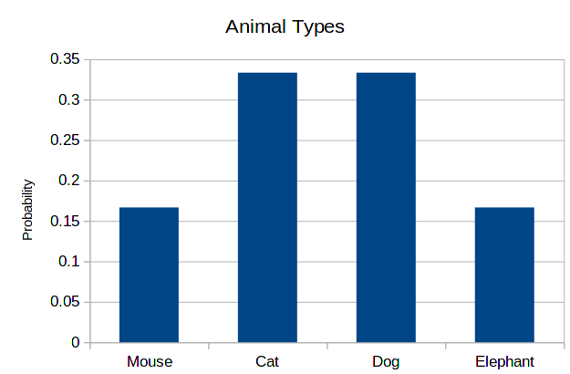
3 Least and most probable categories
The main feature of these categorical histograms is the size of the bars. Therefore, two standard measurements we can extract from it are the least and most probable categories.
We do these by looking at count (or probability) histogram, and finding the smallest and largest values of the right side:
| Animal | Count |
|---|---|
| Cat | 2 |
| Dog | 2 |
| Mouse | 1 |
| Elephant | 1 |
In this case, the smallest count is 1, and the largest count is 2. Therefore, the least probable categories are mouse and elephant, while the most probable ones are cat and dog. This may be very clear in such a small histogram like this one, but may be less evident in a larger one.
4 Using Excel to count numbers and probabilities
In the first class, we did these analysis manually, by counting lines by hand. Now, we want to use Excel to extract this data for us. The starting point will be the table above:
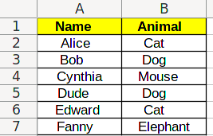
4.1 Listing categories
The first step is to list all the existing categories. This can be found from the data via Excel, using the UNIQUE/УНИК function. But since categories are in often determined by the person who created the data, doing this is in general not necessary. Also, these function are array functions, which are a bit more advanced that what we are studying here.
After this is done, you should have a table like this:
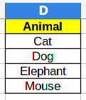
4.2 Counting numbers
Now, we can add a Count column:
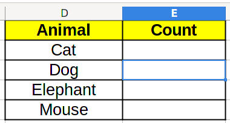
And we can count categories by using the COUNTIF/СЧЁТЕСЛИ function. It has two parameters: the first one is the data range, the second one is the value we want to count:
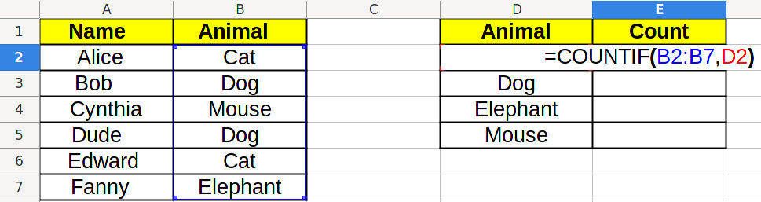
Which will result in the right count to be displayed:
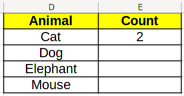
Now, we would like to use Excel click and drag function to fill the whole table. However, if we do that now, and go to the next cell, we will see =COUNTIF(B3:B8,D3), which is not what we want! We want =COUNTIF(B2:B7,D3), because that is the actual range of data.
To solve this problem, we change the formula in the cell to =COUNTIF(B$2:B$7,D2) instead. We added dollars ($) before 2 and 7, which tell Excel that we don’t want to change these values when click and dragging (the point marked in red below).
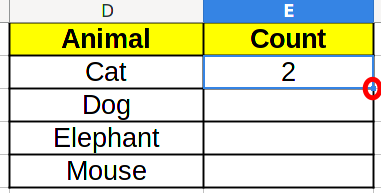
which results in the right count:
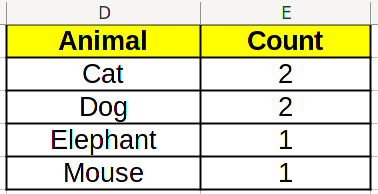
Using this, you can create the histogram for quantities.
4.3 Calculating probabilities
To calculate probabilities, we need to know the total amount of data. For this, we add a new row Total to the table, and sum the values above using SUM/СУММ.
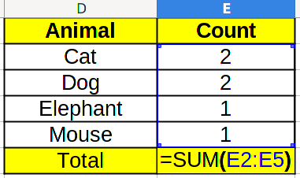
Which in this case, will result in 6. Now, to calculate the probability, we need to divide the count by the total. Take a look at the formula below: the E$6 corresponds to the total amount, and we add the $ so that Excel doesn’t change it when we click and drag.
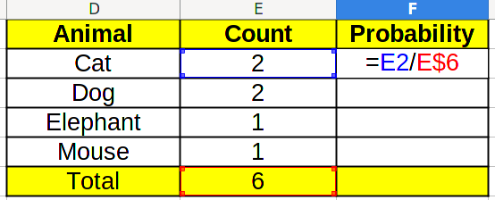
By clicking and dragging the first probability cell in the F column down , and also the count total cell to the right, we find the final result.
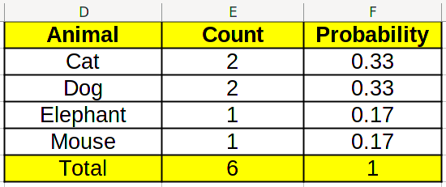
Using this, you can create the histogram for probabilities.
4.4 Finding minimums and maximums
It is interesting to know what are the least and most common categories in the data set. To calculate the minimum, we use the MIN/МИН function on the data range:
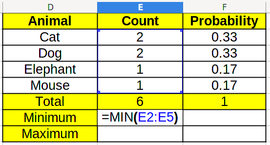
By clicking and dragging to the right, we get the result for probabilities too.
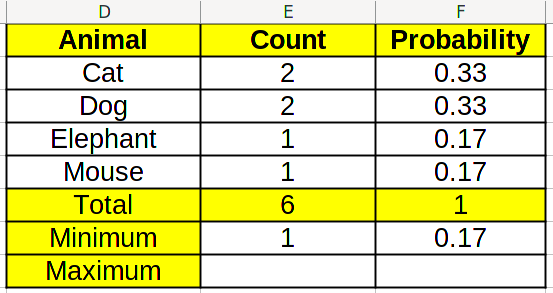
By repeating the same with MAX/МАКС, we retrieve the maximum.
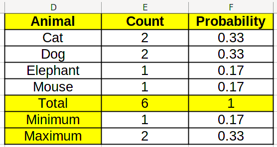
By looking at the counts in the table, we can find which values correspond to maximums and minimums.
5 Exercise
Students will write in the blackboard whether they are left-handed (L), right-handed (R), or ambidextrous (LR). We will use this data and reproduce the same analysis as above.
6 Control
Download this file and apply the method we learned during class.